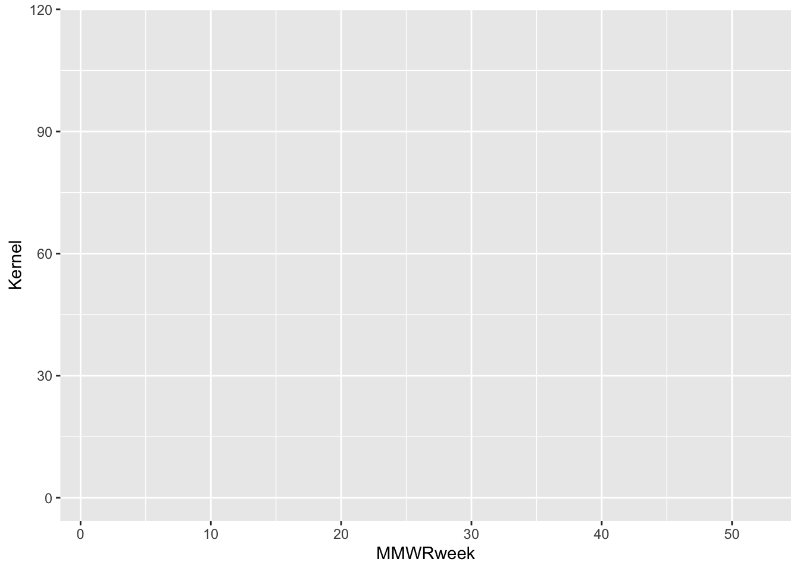
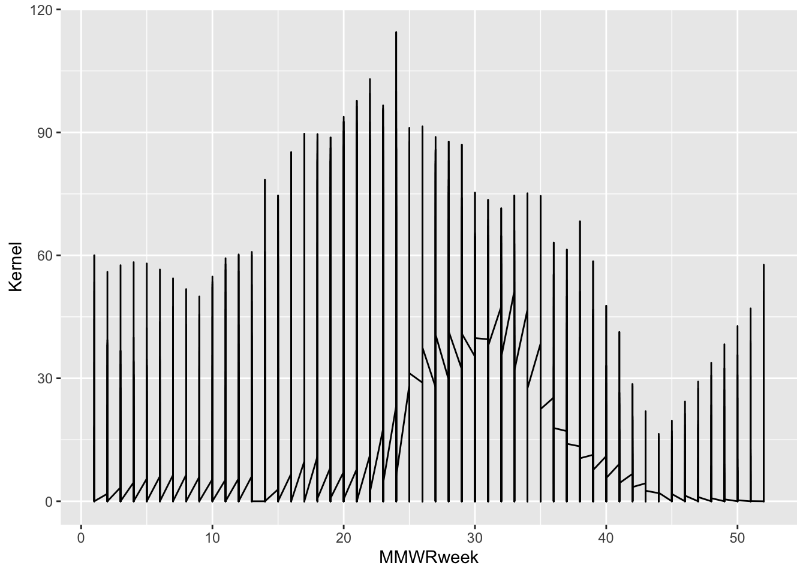
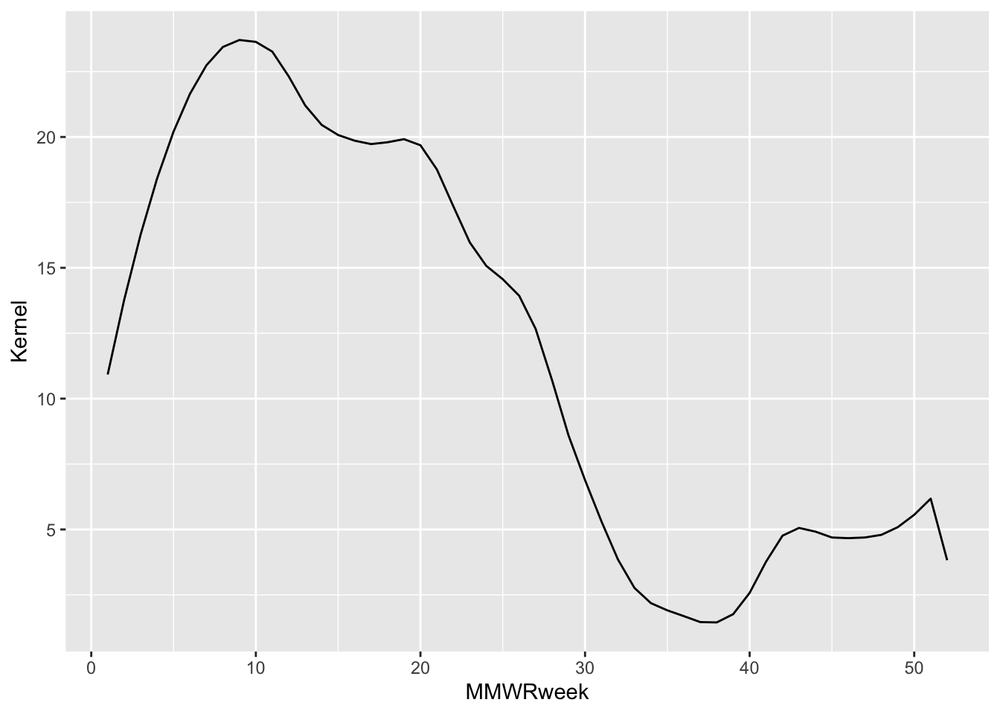
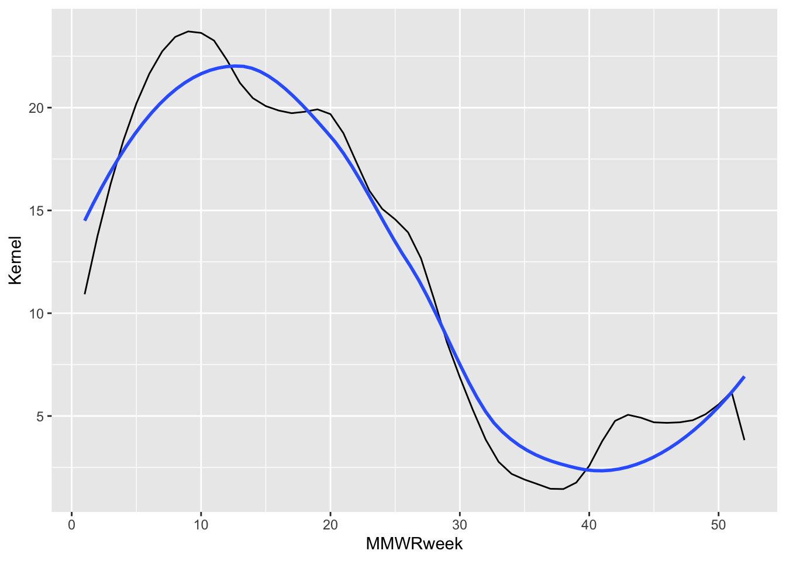
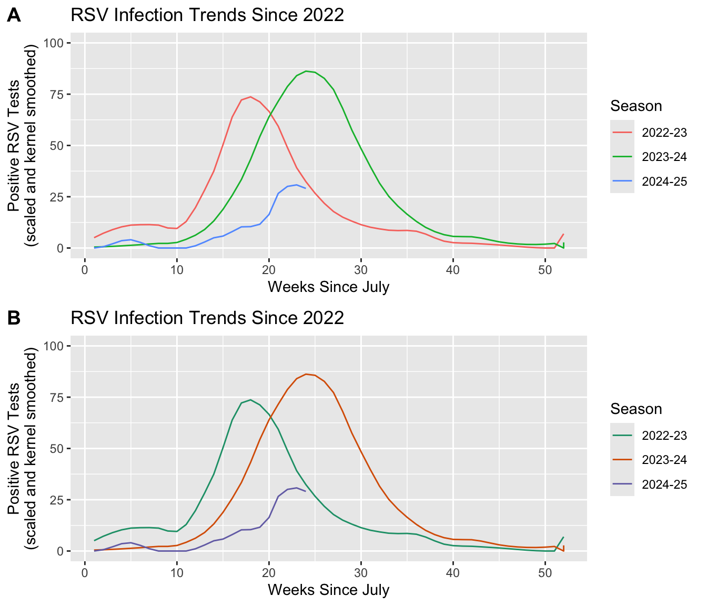
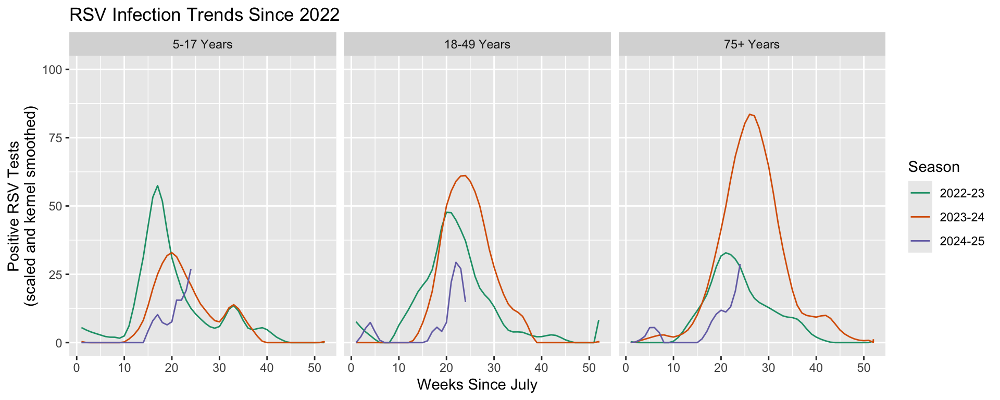
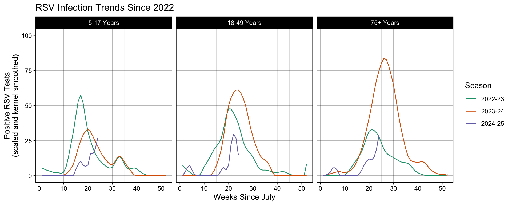

# NOTE: renv initializing might need to be run twice after the repo is
# first copied.
renv::restore()
suppressPackageStartupMessages({
library("arrow") # For reading in the data
library("dplyr") # For data manipulation
library("ggplot2") # For creating static visualizations
library("plotly") # For interactive plots
library("cowplot") # ggplot add on for composing figures
library("RColorBrewer") # Load Color Brewer color palettes
})
# Function to select "Not In"
'%!in%' <- function(x,y)!('%in%'(x,y))Introduction
In this workshop we delve deeper into the domain specific language of statistical graphics that underpins the tidyverse ggplot2 package syntax: the “Grammar of Graphics”. We will explore each discrete grammar layer using laboratory-confirmed RSV hospitalizations data collected by the CDC’s Respiratory Virus Hospitalization Surveillance Network (RESP-NET) surveillance program.
With a better understanding of the syntax fundamentals, we will then get introduced to some advanced uses of ggplot2 that are commonly used in public health:
- Making plots interactive with
plotly - Projecting data to a map
We will close the workshop by asking Yale’s Clarity Platform to reproduce our code from the plot image alone to exhibit how AI can be used to support data visualization work. Clarity is an AI chatbot that offers similar functions to OpenAI’s ChatGPT and Microsoft Copilot with additional data protection. Find out more about Clarity’s security guidelines on “AI at Yale”.
The cleaned and harmonized version of the RSV-NET dataset was compiled as part of the YSPH’s very own PopHIVE project. Special thanks to Professor Daniel Weinberger for allow us to use his own plots in this workshop.
Set Up the Environment
First, we will load the necessary libraries and any special functions used in the script.
Now we will import our cleaned and tidy data, which is ready for plotting. Students who would like to find out more about how to get their data into the plottable, tabular form you will see here can explore our A Journey into the World of tidyverse workshop.
Code Like a Pro
Our data was stored as a parquet file. Para-what? Parquet is a column-oriented data file that allows for efficient data storage and lightweight information retrieval. It is best suited for large data sets that cannot be easily handled “in-memory”. Using the arrow package, we can read and manipulate files in this form.
Those interested to learn more about how they can use parquet to efficiently process large datasets are encouraged to review the workshops hosted by one of our guest speakers, Professor Thomas Lumley: Thomas Lumley Workshops.
df <- read_parquet(file.path(getwd(), "RSV-NET Infections.gz.parquet"))
# glimpse() allows us to see the dimensions of the dataset, column names,
# the first few entries, and the vector class in one view.
df |> glimpse()Rows: 92,519
Columns: 14
$ Region <chr> "California", "California", "California", "Cal…
$ Season <chr> "2018-19", "2018-19", "2018-19", "2018-19", "2…
$ `Week Observed` <date> 2018-10-06, 2018-10-13, 2018-10-20, 2018-10-2…
$ MMWRyear <dbl> 2018, 2018, 2018, 2018, 2018, 2018, 2018, 2018…
$ MMWRweek <dbl> 14, 15, 16, 17, 18, 19, 20, 21, 22, 23, 24, 25…
$ MMWRday <dbl> 7, 7, 7, 7, 7, 7, 7, 7, 7, 7, 7, 7, 7, 7, 7, 7…
$ Characteristic <chr> "Age", "Age", "Age", "Age", "Age", "Age", "Age…
$ Level <chr> "1-4 Years", "1-4 Years", "1-4 Years", "1-4 Ye…
$ `Positives Detected` <dbl> 0, 0, 3, 10, 8, 8, 3, 6, 8, 15, 15, 25, 23, 22…
$ `Scaled Positives` <dbl> 0.000000, 0.000000, 3.896104, 12.987013, 10.38…
$ Spline <dbl> 0.000000, 2.184079, 5.738394, 8.770741, 9.5923…
$ Kernel <dbl> 0.000000, 2.897880, 6.721988, 9.740228, 10.945…
$ `Crude Rate` <dbl> 0.0, 0.0, 0.6, 2.5, 1.9, 1.9, 0.6, 1.3, 1.9, 3…
$ `Cumulative Crude Rate` <dbl> 0.0, 0.0, 0.6, 3.1, 5.0, 6.9, 7.6, 8.8, 10.7, …ADD quick description of the data
season (July to June of the following year)
Basic Uses of ggplot2()

Lin Pedersen. Accessed from YouTube March
15th, 2025.
The Data and Mapping Layers
The first (and arguably most crucial!) layer is Data, but simply adding it to ggplot() will only generate a plot object with nothing else. In the second layer, Mapping, we tell the function which variables get used for which aesthetic feature displayable on the plot object.
In this layer, we define the position, color, size, or shape that our values take. Every type of data representation requires an aesthetic statement to point variables to relevant aesthetic features. This can help make a plot visually appealing, but an astute user of ggplot() will leverage them to highlight underlying patterns in the data as well.
Here we use the mapping function, aes(), to point the week in the epidemiological year (MMWR) variable to the \(x\)-axis and RSV positive tests (scaled and Gaussian kernel smoothed) to the \(y\)-axis.
Geometry and Statistic Layers Dictate the Aesthetics Mapping
As we will see in the next two layers, the kinds of features that are required to generate the most fundamental visualization of our data will depend on the type of geometry or statistical transformation we are plotting. Data and Mapping must always be defined by the user. Some geom_*() or stat_*() functions also require the plot-specific statistic or position to be provided by the user, but sometimes these elements are already assigned by the default settings.
You can find more about the required and ancillary aesthetic features used by different Geometry or Statistics layers in the ggplot2 package references documentation and cheatsheet. Different specifications available for aesthetic features can also be found in one of their vignettes: aesthetic specifications.
# The data and aesthetics mapping layers combined.
ggplot(data = df, aes(x = MMWRweek, y = Kernel))
Important
We can use the base R pipe symbol |> to pass objects into subsequent functions that build on the previous result. This has the added benefit of organizing operations into digestible pieces, as opposed to gnarly nested functions. That would not be so knarly, man!
Going forward we will no longer explicitly dictate that data = df, as this is already implied by the pipe operation. Just keep in mind that the start of a graphical expression begins with a ggplot() + statement, and everything preceding this is not part of the graphical layers.
The Geometry Layer
We will now tell the function how we want the data to be displayed in the plot object. We do this by adding the Geometry layer. Together with Data and Mapping, these three layers form the core pieces required to generate any basic visualization with ggplot2.
The Geometry layer does the computational legwork that translate a data frame with mappings into a discernible plot. Behind the scenes, it is computing how points get spaced and oriented to create the specific geometry defined, whether that be for a histogram, scatter plot, box plot, and so forth.
Each geometry layer can take a specific data and aesthetics mapping, overwriting anything defined in the ggplot() plot object. It also interprets a statistical transformation and position adjustment to modulate the graph. Here, we will plot a trend line showing changes in RSV positives detected over the course of an infection season by using geom_line().
Note
In some ggplot2 references statistics and position are both defined as separate layers in the hierarchy. This workshop separates out statistics, but does not separate out position its own layer.
Position sets the rules around how objects get placed relative to one another; a setting necessary within some geom_* functions. Think of plotting a histogram scaled with an aesthetic color mapping. Do the groupings plot on top of each other, side-by-side, or get scaled to fill [0, 1] on the \(y\)-axis? This is what the position setting will determine.
# All three required layers combined: data, aesthetics mapping, and geometry.
df |>
ggplot() +
geom_line(aes(x = MMWRweek, y = Kernel))
Look at this plot, I mean oy vey! If we think back to the glimpse of our dataset we might remember that there are additional columns of information that we can use to further distinguish one infections trend.
$Region
[1] "California" "Colorado" "Connecticut" "Georgia"
[5] "Maryland" "Michigan" "Minnesota" "New Mexico"
[9] "New York" "North Carolina" "Oregon" "Region 1"
[13] "Region 10" "Region 2" "Region 3" "Region 4"
[17] "Region 5" "Region 6" "Region 8" "Region 9"
[21] "Tennessee" "Utah"
$Season
[1] "2016-17" "2017-18" "2018-19" "2019-20" "2020-21" "2021-22" "2022-23"
[8] "2023-24" "2024-25"
$`Characteristic Level`
[1] "1-4 Years" "18-49 Years"
[3] "5-17 Years" "50-64 Years"
[5] "65-74 Years" "75+ Years"
[7] "<1 Years" "American Indian or Alaska Native"
[9] "Asian or Pacific Islander" "Black or African American"
[11] "Female" "Hispanic or Latino"
[13] "Male" "N/A"
[15] "White" df |>
# Subset the data to one infection trend outcome by selecting one possible
# instantiation from the array of distringuishing varaibles.
filter(Region == "Connecticut", Season == "2021-22", Level == "N/A") |>
ggplot() +
geom_line(aes(x = MMWRweek, y = Kernel))
This looks much nicer, but it doesn’t tell us much about our data. Notice, however, that the same plot can be generated by adding the aesthetics mapping to the plot object (ggplot()) or the geom_*() layer.
# A viable alternative representation of the above code:
df |>
filter(Region == "Connecticut", Season == "2021-22", Level == "N/A") |>
ggplot(aes(x = MMWRweek, y = Kernel)) +
geom_line()Discussion: Can you think reasons why you would choose one over the other?
You might be asking yourself why I went through the pains of showing the thought process behind tuning the plot so that it shows one distinguishable trend line. Am I not simply covering the grammar of whatever to plot a simple trend line while you eat a delicious cookie and compartmentalize your upcoming exams?
As I hinted at earlier, the advanced user of ggplot2 is going to leverage these layers for effective visualization of underlying patterns of the data itself. By controlling for variables that add noise or redundancies to a plot, we are opening the door for inspiring communicating insights through visualization.
Recall:
“… graphics are instruments of reasoning about quantitative information” – Yale Professor Edward Tufte from his book The Visual Display of Quantitative Information
More on this in a moment. But while I have your attention, those cookies are delicious; this is objectively and observably true.
The Statistics Layer
Following the Geometries layer in our hierarchy is Statistics. In this context, statistics refers to the transformations applied to data primarily for the purposes of generating plottable values. For example, calculating box plot quartiles or bar plot counts.
These same transformations are being used under the hood of the geome_*() functions. As you might expect, many statistics functions are interchangeable with geometric functions. For example, one can use geom_bar(stat = "count") or stat_count(geom = "bar") to produce the same bar plot (ggplot2 Layer statistical transformations - Paired geoms and stats).
Keep in mind, however, that this is not always true, and sometimes statistical functions are sub-components of composite geometric engines. One example being the stat_ydensity() function, which generates the smoothed lines along the \(y\)-axis of a violin plot.
Important
If you want to use a statistically transformed variable for an aesthetic like fill or color, you need to use after_stat() around the variable name to scale the mapped aesthetic properly. An example provided in the ggplot2 cheatsheet is: ggplot(df) + stat_density_2d(aes(fill = after_stat(level)), geom = "polygon").
In our example I had separately smoothed the “Scaled Positives” variable using a spline or Gaussian kernel. If I plot a ggplot2 statistic layer that smooths the same variable using the locally estimated scatter plot smoothing (LOESS) method we see it aligns closely with the Gaussian kernel result.
df |>
filter(Region == "Connecticut", Season == "2021-22", Level == "N/A") |>
ggplot() +
# Values smoothed before plotting using Gaussian kernel.
# Plotted as the black line.
geom_line(aes(x = MMWRweek, y = Kernel)) +
# Values smoothed by the stat_smooth() ggplot function using LOESS.
# Plotted as the blue line.
stat_smooth(aes(x = MMWRweek, y = `Scaled Positives`),
geom = "smooth", method = "loess",
se = FALSE)
Code Like a Pro
When a stat_*() is applied to a data frame (either inside a Geometric or Statistic layer), a modified data frame is generated as the output containing new, transformed variables. It is possible to call these “generated variables” within the plot object and use them for graph tuning.
One example provided in ggplot2: Elegant Graphics for Data Analysis, shows how to call the stat_density() “generated variable”, density, created when the data frame is passed through geom_histogram(): Chapter 13 Generated variables.
ggplot(df, aes(x)) + geom_histogram(binwidth = 500)plots a histogram with counts as the \(y\)-axis.ggplot(df, aes(x)) + geom_histogram(aes(y = after_stat(density)), binwidth = 500)plots that same histogram with the calculated distribution density as the \(y\)-axis.
The Scales Layer
In the same way the Statistics layer defines the statistical transformations happening under the hood of the geometric functions, Scales is what interprets an aesthetic Mapping into plottable values. Once the aesthetics are defined by the user, the ggplot2 algorithm automatically applies the necessary scales. Unless we want to customize the scaling, the user does not need to explicitly write out the default scales needed to generate a plot.
For example, scale_*_continuous() gets automatically applied to our plot because of the \(x\) and \(y\) aesthetics mappings we’ve defined. The code snippet below explicitly writes out these scaling functions that get used, but because we are not modifying their defaults it is not necessary to include them in our own code.
# The automatically applied scale_*() functions to the x and y mapping.
df |>
filter(Region == "Connecticut", Season == "2021-22", Level == "N/A") |>
ggplot(aes(x = MMWRweek, y = Kernel)) +
geom_line() +
# The following two lines are not required for us to include since
# they are implied by the type of x and y vectors we assigned.
scale_x_continuous() +
scale_y_continuous()One of the greatest advantages to ggplot2 is it offers users a great deal of flexibility. This concept is especially true for the Scales layer. While the preceding layers offer some level of customization, the Scales layer increases the available options by adding on top of previous settings. This cross-layer communication makes for a seemingly endless array of options and can make it one of the hardest layers to master.
Most customization options fall into two buckets:
- Position scales and axes (Chapter 10 of ggplot2: Elegant Graphics for Data Analysis)
- Color scales and legends (Chapter 11 of the same book)
The different applications of Scales covered in these chapters range from canonical axes scaling using scale_*_log10(), scale_*_sqrt(), and scale_*_reverse() to tuning axis breaks and labeling or from scaling color pallets to cleaning the legend. The two chapters I’ve cited here from ggplot2: Elegant Graphics for Data Analysis by Hadley Wickham, Danielle Navarro and Thomas Lin Pedersen are invaluable introductions to different applications of Scales.
In the Scales layer of our example, we will use labs() to customize the plot labels and set the \(y\)-axis limits to span the entire range of our variable, \([0, 100]\). It is also possible to assign customized color pallets to grouped outcomes. Say that for our example we want to compare RSV infection trends between seasons going back three years to 2022, including the current infections season. How do we modify our running plot example to do this?
Steps:
- Add an aesthetic Mapping that prompts the plot object to group the unique seasons represented and associate them with a color.
- Add a
scale_color_*function that will apply a customized color to the Scales layer instead of the default palette.
# Specify the infection seasons we'd like to see out of the range of options.
include_seeasons <- c("2022-23", "2023-24", "2024-25")
# Using Scales to highlight insights to infection trends across seasons.
plot_A <- df |>
# Since we are grouping outcomes by Season, we only need to subset the
# dataset to the three seasons we wish to plot.
filter(Region == "Connecticut", Season %in% include_seeasons, Level == "N/A") |>
# Add the aesthetic mapping that will color (and group) outcomes based
# on the unique elements in the Season variable. Also set the y-axis range
# and customize plot labels.
ggplot(aes(x = MMWRweek, y = Kernel, color = Season) ) +
geom_line() +
labs(title = "RSV Infection Trends Since 2022",
x = "Weeks Since July",
y = "Positive RSV Tests\n(scaled and kernel smoothed)") +
ylim(0, 100)
# Notice that we do not need to specify a scale_color_*() because
# we want this plot to use the default color palette.
# Customizing the color applied to that grouping by building on the first plot.
plot_B <- plot_A +
# "Type" denotes which set of color palette's to choose from. In
# this case we are choosing from the "Type = Qualitative", from
# which we can choose the "Palette = Dark2".
scale_color_brewer(type = "qual", palette = "Dark2")
Discussion: We see that associating a variable with an aes(color) will also group by that same variable.
- What would happen if we only group the outcomes and exclude the color statement: i.e.
aes(group = Season)? - Does adding a
scale_color_*()statement change the result? - Why do you see the result you get?
Important
Scales allows you to modify the limits of axes (i.e. with lims() or *lim()) giving the illusion that you can “zoom” into the plot. This is not a good use of the Scales layer, as it will sometimes have the unintended effect of distorting your result. Instead use the Coordinates layer to zoom into a select portion of your plot.
Code Like a Pro
ggplot2 does not give users a way to combine multiple plots together into one composite figure that is publication-ready. Fortunately, the community developed ggplot2 extension, cowplot, was created specifically to support generating publication-quality figures. This is the package extension I used to generate plots A and B in the recent example!
cowplot pkgdown page developed by Professor Claus Wilke at the University of Texas at Austin.
The Facets Layer
In the recent section, we showed how we can use Scales to highlight differences in infection trends between seasons. Doing so will plot the results on the same object, but what if we want to separate group comparisons over multiple plots?
Technically, we could code a new plot for each discrete subgrouping of our data that we want to spread out. If each plot is comprised of the same elements and aesthetic settings, however, there is an easier way to achieve the same result. The Facets layer allows us to generate a matrix grid showing the exact same plot for each subgroup available in a discrete variable.
Similar to the Scales layer, each plot object we compose implicitly assigns the faceting to NULL by default. The user only needs to include a Facets layer expression if they wish to change the default settings.
# The default faceting is automatically applied.
df |>
filter(Region == "Connecticut", Season %in% include_seeasons, Level == "N/A") |>
ggplot(aes(x = MMWRweek, y = Kernel, color = Season) ) +
geom_line() +
labs(title = "RSV Infection Trends Since 2022",
x = "Weeks Since July",
y = "Positive RSV Tests\n(scaled and kernel smoothed)") +
ylim(0, 100) +
scale_color_brewer(type = "qual", palette = "Dark2") +
# The following line not required for us to include.
facet_null()There are two functions for faceting: facet_grid() and facet_wrap(). Both functions receive similar arguments expressed slightly differently, and thus ultimately do the same thing. The biggest difference between them is facet_grid() will divide categories into new columns or rows, while facet_wrap() will optimize the matrix output into a roughly rectangular view.
It is best practice to choose the right faceting function based on how long the array of discrete outcomes you will be showing is. In our case, we are going to further resolve comparisons of RSV infections by seasons to include an additional comparison between a selection of age groups. The dataset includes seven age groups, but we are primarily interested in comparing infection trends in children, adults, and the elderly. We will therefore, only be plotting three different groups, making facet_grid() and acceptable function to use.
facet_grid() allows us to specify how the subplots are organized: by new columns or new rows. It is possible to compare as many as two variables by separating one over new columns and another over new rows: facet_grid(rows ~ columns). We will separate out the age groups over new columns by dictating facet_grid(~Level). Notice that we want to specify the order we see these panels, which we can do by wrapping our variable name with factor(Level, levels = ordered_vector).
# Create our ordered vector that will be used in factor().
ages_ordered <- c("5-17 Years", "18-49 Years", "75+ Years")
# Add column-wise faceting.
df |>
# We only want to maintain three of the seven age groups recorded. We can
# use the same variable we generate above to select these.
filter(Region == "Connecticut", Season %in% include_seeasons, Level %in% ages_ordered) |>
ggplot(aes(x = MMWRweek, y = Kernel, color = Season) ) +
geom_line() +
labs(title = "RSV Infection Trends Since 2022",
x = "Weeks Since July",
y = "Positive RSV Tests\n(scaled and kernel smoothed)") +
ylim(0, 100) +
scale_color_brewer(type = "qual", palette = "Dark2") +
# Use "~Level" instead of "Level~" to create new plots as columns.
facet_grid(~factor(Level, levels = ages_ordered))
The Coordinates Layer
Up until this point, we have covered layers that attribute variables to geometric-specific aesthetics in Mappings and transformations that interpret those assignments into plottable values in Statistics and Scales. The Geometry layer does a combination of statistical transformations and positioning, preparing the attributed variables into values that will take the chart shape we are looking to create.
It is the Coordinates layer that then plots these values on a graph. It’s important to appreciate this subtlety because some scaled or statistically transformed values will look entirely different if the wrong coordinate system is applied. Such as, if we attempted to plot an angle on a Cartesian plane in Euclidean space instead of in polar coordinates.

Coordinate layer functions fall into two buckets:
- Linear:
coord_cartesian(),coord_flip(), andcoord_fixed() - Non-linear:
coord_map()/coord_quickmap()/coord_sf(),coord_polar(), andcoord_trans()
Applying the Cartesian, polar, and transformed coordinates is reasonably straightforward, and we will introduce the topic of map projections today. Keep in mind that the Coordinate layer plays an abstract role in the plot composite making for some key application notes that the user will need to be aware of. More on this subject can be explored in Chapter 15 Coordinate systems of ggplot2: Elegant Graphics for Data Analysis.
Previously, we mentioned that axis limits can be applied in Scales, but by doing so we unintetionally skew the results. Instead, it is better to “zoom” into a plot using the Coordinates layer. In a similar vein, if we want to swap the axes our \(x\) and \(y\) variables get plotted to, we want to use coord_flip() instead of changing aes(x = x_var, y = y_var) to aes(x = y_var, y = x_var).
# By default plots are generated on non-transformed Cartesian coordinates.
df |>
filter(Region == "Connecticut", Season %in% include_seeasons, Level %in% ages_ordered) |>
ggplot(aes(x = MMWRweek, y = Kernel, color = Season) ) +
geom_line() +
labs(title = "RSV Infection Trends Since 2022",
x = "Weeks Since July",
y = "Positive RSV Tests\n(scaled and kernel smoothed)") +
ylim(0, 100) +
scale_color_brewer(type = "qual", palette = "Dark2") +
# The following line not required for us to include.
coord_cartesian()
Code Like a Pro
As with any grammar, there are different ways we can make a statement. Say we have a variable that plots with a curve, and you know that you can linearize it using a base 10 \(\log\). We now have three approaches to graphically representing its linearized transformation. This example is from the coord_trans() documentation, Transformed Cartesian coordinate system.
- Transform before plotting or in
aes()withlog10(). NOTE: only do simple transformations inaes(), like a \(\log_{10}\) transformation, and leave more complicated operations to more robust methods. - Scales:
scale_*_log10()orscale_*_continuous(trans = "log10") - Coordinates:
coord_trans(* = "log10")
Discussion: If we apply each option individually, do they all plot the same way? If not, what do you think is happening and how would you fix the code?
The Theme Layer
The Theme layer gives the users control over non-data aspects of the plot: i.e. styling the fonts, axes ticks, panel strips, backgrounds, location (or the exclusion) of the legend, etc. It’s used to format the plot to make it visually appealing or match intended design schemes. Unlike every other layer described, Theme will not change how values are transformed, their perceptual properties, or how geometries get rendered.
How the user intends to use Themes will depend on where in the data procesing cycle they are performing visualization, and how they want their polished plots to look. It is therefore not likely to be helpful if I get granular about the different function arguments in Themes. Instead, I encourage students to explore the layer reference page, where they can peruse details for all the possible function arguments at their leisure: Modify components of a theme.
ggplot2 comes with numerous theme that get installed with the package: Complete themes. There are also numerous community developed themes that you can load, some of which have been curated by R Charts: Themes in ggplot2.
Each time you make a plot, the default is theme_gray(). As before, you do not need to explicitely write this out if you do not intend to change the default settings. In our example, we want use another, more visually appealing theme that better displays our results. We will use another ggplot provided theme: theme_linedraw().
# Using one of ggplot2's provided theme presets.
df |>
filter(Region == "Connecticut", Season %in% include_seeasons, Level %in% ages_ordered) |>
ggplot(aes(x = MMWRweek, y = Kernel, color = Season) ) +
geom_line() +
labs(title = "RSV Infection Trends Since 2022",
x = "Weeks Since July",
y = "Positive RSV Tests\n(scaled and kernel smoothed)") +
ylim(0, 100) +
scale_color_brewer(type = "qual", palette = "Dark2") +
facet_grid(~factor(Level, levels = ages_ordered)) +
# Add the Themes layer at the end of our plot object expression.
theme_linedraw()
Code Like a Pro
Say you regularly generate plots that you want to apply the same custom Theme settings to, such as producing visualizations for a group that has specific branding or plots for a cohesive publication. There are two possible solutions you can take that will obviate the need to rewrite the same theme settings in each plot object.
theme_set()allows you to set a new theme globally, overriding the default theme settings for the environment: Get, set, and modify the active theme.- Creating your own custom theme function by modify an existing
theme_*()or writing one from scratch: Learning to create custom themes in ggplot by Maddie Pickens and Chapter 20.1 New Themes of ggplot2: Elegant Graphics for Data Analysis.
Overlaying Layers
Now that we have become acclimated to each layer that constitutes one cohesive graph, we are ready to discuss how to effectively build more complex graphs by overlaying additional layers. Earlier I hinted that the expressions for each layer stands alone as it’s own object in the programming environment. When a graph is rendered by ggplot2 it’s going to compress these layers one on top of another sequentially.
This is all well and good if the plots we are generating contain the same Data and Mapping settings, but what if they do not? What if we want to plot a new Geometry or Statistic layer that doesn’t use the same settings used by other layers? Every time you add a new layer, you have the opportunity to override the inherited settings that were given in the leading plot object, ggplot().
For example, consider the following code. What happens if we change aspects of the Data and Mapping used by geom_line()?
ggplot(df, aes(x = MMWRweek, y = Kernel)) +
geom_line()| Operation | Layer aesthetics | Result |
|---|---|---|
| Add | aes(colour = Season) |
aes(x = MMWRweek, y = Kernel, colour = Season) |
| Override | aes(y = Level) |
aes(x = MMWRweek, y = Level) |
| Remove | aes(y = NULL) |
aes(x = MMWRweek) |
It is therefore best practice to assign the Data or Mapping in the leading ggplot() plot object when you want those settings carried forward to all subsequent layers. When you need to specify new settings for select Geometric or Statistic layers, then you can specify those mappings in that layer, overriding any previous designation. You can find more information about plot object layering in ggplot in Chapter 13 Build a plot layer by layer in ggplot2: Elegant Graphics for Data Analysis.
Code Like a Pro
The ability to treat each layer as it’s own object in the coding environment allows for flexible and adaptive programming. For example, you can predefined the settings to generating a smoothed line that you apply to different ggplot() objects, leaning on inherited Data and/or aesthetics Mappings given in each.
You can find more information about plot object layering in ggplot in Chapter 18 Programming with ggplot2 in ggplot2: Elegant Graphics for Data Analysis.
To exhibit this in our running example, let’s add our pièce de résistance, the cherry on top, a leading point highlighting the most recently recorded surveillance week. In order to isolate this exact point, we need to prepare a different subset from the same dataset. We do this by filtering for the same distinguishing variables (Region, Season, and Characteristic Level), followed by filtering to the current infections season, and then finally the most recent week recorded.
This point is added to our graph as a fresh layer that is printed on the plot object generated up to the geom_line() expression. In the function settings, we override the inherited Data object and leave the Mappings blank, allowing the aesthetics settings to be inherited from the ggplot() object.
# Subset the dataset to isolate the leading data point we wish to plot.
leading_point = df |>
filter(Region == "Connecticut", Season %in% include_seeasons, Level %in% ages_ordered) |>
filter(MMWRyear == max(MMWRyear)) |>
filter(MMWRweek == max(MMWRweek))
# Add a new Geometry layer, geom_point(), using a new dataset.
df |>
filter(Region == "Connecticut", Season %in% include_seeasons, Level %in% ages_ordered) |>
ggplot(aes(x = MMWRweek, y = Kernel, color = Season) ) +
geom_line() +
# Show the leading point as a red dot using the leading_point subset.
geom_point(data = leading_point, color = "red") +
labs(title = "RSV Infection Trends Since 2022",
x = "Weeks Since July",
y = "Positive RSV Tests\n(scaled and kernel smoothed)") +
ylim(0, 100) +
scale_color_brewer(type = "qual", palette = "Dark2") +
facet_grid(~factor(Level, levels = ages_ordered)) +
theme_linedraw()
Look at us, we are such ggplot experts now! High five! Oh wait a second, this is aesynchronous material… give yourself a high five for me 👍.
Advanced Uses of ggplot2()
In this section we will cover two advanced uses of ggplot2 commonly used in public health: projecting data into a map and making the values intractable.
Introduction to Map Projections with ggoplot
Introduction to Interactive Plotting with plotly
#renderPlotly({
#map_data <- epic_ed_combo %>%
# filter(date == input$selected_date & Level == '<1 Years') %>%
# mutate(state = state.abb[match(geography, state.name)] ,
#Note, if >20%, cap at 20 for plotting!
# pct_RSV_ED_epic= if_else(pct_RSV_ED_epic>20,20, pct_RSV_ED_epic) ) %>%
# filter(!is.na(state)) %>%
# as.data.frame()
# max.val <- max(epic_ed_combo$pct_RSV_ED_epic, na.rm=T)
#pal1 <- viridis_pal()(4)
#date.print <- input$selected_date
#p1 <- usmap::plot_usmap(regions = "state", data = map_data, values = "pct_RSV_ED_epic") +
#scale_fill_gradientn(
#colors = pal1,
#values = scales::rescale(c(0, 5, 10, 15, 20)),
#limits = c(0, 20),
#na.value = "#440154FF"
#) +
#ggtitle(paste("RSV ED Visit Percentage <1 year olds on", date.print))
#ggplotly(p1)
#})Challenge Questions
In the worked through example we leverage two of the three distinguishing variables: Season and Characteristic Level. In this questions, we want to focus on the third one, Region. Using the final line-graph code from the worked through example, add a row-wise facet to compare two states or HHS regions.
In the polished version of the line plot we layered an additional point on the graph that highlighted the most currently represented date in the active infection season. To get this data, we externally filtered down the dataset to give that point, repeating some of the filtering we are already doing before the plot gets generated.
- Can you modify this approach so that we no longer require the external dataset, thus simplifying our code?
- Now try using
stat_summary(filtered_data, geom = "point", fun = "max", color = "red")instead ofgeom_point(). If you only filter to MMWRyear, do you get the same result, and if not why?
We want to see how many counties called “Adams” are represented in the data set.
- Subset the data set by string matches in
Countyand find how many rows you see. Remember that each county is expected to have 39 different dates reported. - Table your subset results by
CountyandProvince_State. Does this change the answer you got from part a?
- Subset the data set by string matches in
Appendix
This workshop was generated using R (v 4.4.4) in the RStudio IDE (v 2024.12.1+563). renv was used to store all the relevant packages and package versions with the workshop codespace. All of the workshop materials can be accessed on the ysph-dsde GitHub: Data Visualization with ggplo2.